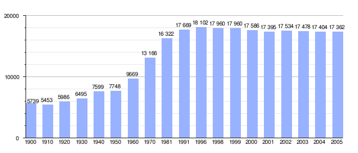

Ubrique es un municipio español, ubicado en el sur de Andalucía, en la sierra de Cádiz. Según el INE, en el año 2016 contaba con 17.766 habitantes. Su extensión superficial es de 71 km² y tiene una densidad de 244,75 hab/km². Sus coordenadas geográficas son 36º 40' N, 5º 26' O. Se encuentra situada a una altitud de 337 metros y a 118 kilómetros de la capital de provincia, Cádiz.
En sus proximidades se han localizado los restos de la ciudad romana denominada Ocuri. No muy lejos mas también se construyó en época musulmana una fortaleza llamada Cardela, que hoy en día se llama Castillo de Fátima. Fue conquistada en 1485 por Rodrigo Ponce de León, Duque de Arcos, pasando en 1490 a pertenecer a la casa de Arcos. En 1501 se inicia la repoblación y se empieza a consolidar el núcleo del que crecería Ubrique. Ya en el siglo XVIII se instalan múltiples fábricas de piel que siguen la tradición musulmana de la marroquinería. Durante la primera república vivió una época convulsa llegando a tener dos gobiernos locales, en un término municipal en que las posesiones del duque de Osuna eran predominantes. Hoy en día es uno de los principales centros de trabajo de la piel de Europa.
Forma parte de la Ruta de los pueblos blancos, estando en la entrada del Parque Natural de Grazalema y del Parque Natural Los Alcornocales. El río Ubrique lo divide por la mitad, aunque también cuenta con otros ríos como el Tavizna.
En sus proximidades se han localizado los restos de la ciudad romana denominada Ocuri. No muy lejos mas también se construyó en época musulmana una fortaleza llamada Cardela, que hoy en día se llama Castillo de Fátima. Fue conquistada en 1485 por Rodrigo Ponce de León, Duque de Arcos, pasando en 1490 a pertenecer a la casa de Arcos. En 1501 se inicia la repoblación y se empieza a consolidar el núcleo del que crecería Ubrique. Ya en el siglo XVIII se instalan múltiples fábricas de piel que siguen la tradición musulmana de la marroquinería. Durante la primera república vivió una época convulsa llegando a tener dos gobiernos locales, en un término municipal en que las posesiones del duque de Osuna eran predominantes. Hoy en día es uno de los principales centros de trabajo de la piel de Europa.
Evolución de la población desde 1980
